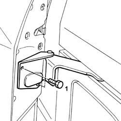
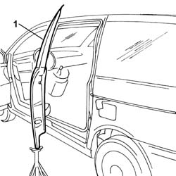
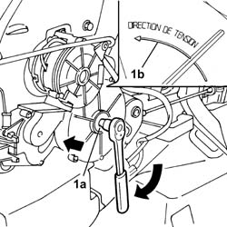
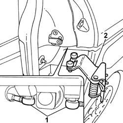
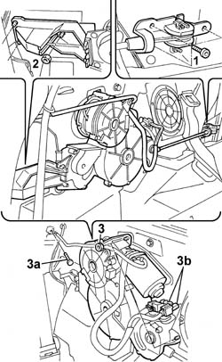

7020N30 GEARED MOTOR FOR OPENING/CLOSING LEFT OR RIGHT (ONE) SLIDING SIDE DOOR - R.R.
- Path
- Procedures > 70 FITTINGS > 7020 LOAD COMPARTMENT DOORS > 7020N SLIDING SIDE DOOR CENTRAL LOCKING > 7020N30 GEARED MOTOR FOR OPENING/CLOSING LEFT OR RIGHT (ONE) SLIDING SIDE DOOR - R.R.
- Kind
- repair procedure (removal / refitting; the operation number is the code)
- Applies to
- all engines; all production periods
- Interactive page
- https://sloeber94.github.io/elrnDB-fUlss/en/#/179007745
Applies to: all engines; all production periods
 Removing
Removing
 Refitting
RefittingOp. 5530B56 BATTERY DRIP TRAY COVER - R.R.
- Disconnect the negative battery terminal.
Op. 7040H42 REAR PILLAR TRIM - R R
Op. 7040B22 LUGGAGE COMPARTMENT/LOAD PLATFORM MOULDING - R+R
Op. 5010C08 VENT IN LUGGAGE COMPARTMENT/LOAD CARRYING PLATFORM SIDE TRIM - R.R.
Op. 7040B13 LOAD COMPARTMENT/LOAD PLATFORM RIGHT SIDE TRIM - R R
- Apply protective tape to the rear wing in the sliding area
- Support the sliding side door.
1. Undo the bolts fixing the sliding side door rear sliding element.

Applies to: all engines; all production periods
1. Tilt the sliding door towards the outside with a support.

Applies to: all engines; all production periods
1. If working on the left side of the vehicle, using an 8 mm Allen key press and manually rotate the centre section of the tensioning device (1a) in the opposite direction to the tensioning device (1b) shown in the diagram in order to loosen the drive cables tension.

Applies to: all engines; all production periods
1. Release the two ball joints for the sliding element drive cables.
2. Remove the sliding side door rear sliding element.

Applies to: all engines; all production periods
1. Undo the front bolts fixing the front sliding device.
2. Undo the nuts fixing the rear sliding device.
3. Undo the nuts fixing the geared motor and the nut (3a) fixing the earth lead, disconnect the electrical connections (3b) and the clips.

Applies to: all engines; all production periods
Refitting
Removing- Place the geared motor in position.
- Tighten the nuts and the bolts fixing the geared motor, the earth lead and the two pulley supports.
- Connect the electrical connections and the clips.
- Position the rear sliding element for the door and press fit the two ends of the drive cables.
- Fasten the sliding element and the door.
- Manually slide the door until it is in the rear end of travel position.
Op. 7020D67 ROD FOR LEFT OR RIGHT MOTORIZED SLIDING SIDE DOOR OPENING/CLOSING DEVICE - ADJUSTMENT
Op. 7040B13 LOAD COMPARTMENT/LOAD PLATFORM RIGHT SIDE TRIM - R R
Op. 5010C08 VENT IN LUGGAGE COMPARTMENT/LOAD CARRYING PLATFORM SIDE TRIM - R.R.
Op. 7040B22 LUGGAGE COMPARTMENT/LOAD PLATFORM MOULDING - R+R
Op. 7040H42 REAR PILLAR TRIM - R R
- Connect the negative battery terminal.
Op. 5530B56 BATTERY DRIP TRAY COVER - R.R.
- Proceed with the initialization of the electrical components involved in the operation as described in the Descriptions and operation chapter Subassembly 5505A.
Topics linked from this page (7)
- 5010C08 VENT IN LUGGAGE COMPARTMENT/LOAD CARRYING PLATFORM SIDE TRIM - R.R.
- 5530B56 BATTERY DRIP TRAY COVER - R.R.
- 7020D67 ROD FOR LEFT OR RIGHT MOTORIZED SLIDING SIDE DOOR OPENING/CLOSING DEVICE - ADJUSTMENT
- 7040B13 LOAD COMPARTMENT/LOAD PLATFORM RIGHT SIDE TRIM - R R
- 7040B22 LUGGAGE COMPARTMENT/LOAD PLATFORM MOULDING - R+R
- 7040H42 REAR PILLAR TRIM - R R
- 7040H50 REAR PANEL - R R